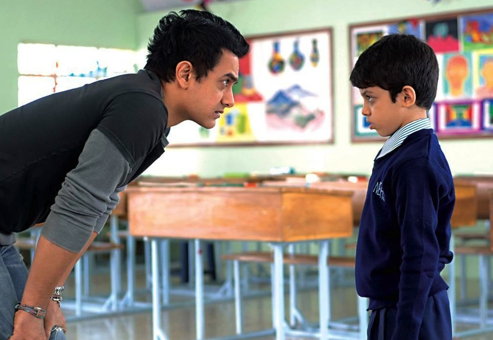
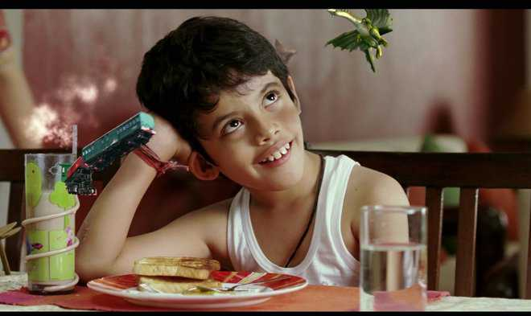

Taare Zameen Par (Stars on the Earth), is a 2007 Indian Hindi-language psychological drama film produced and directed by Aamir Khan. It explores the life and imagination of Ishaan, an artistically gifted 8-year-old boy whose poor academic performance leads his parents to send him to a boarding school, where a new art teacher Nikumbh suspects that he is dyslexic and helps him overcome his reading disorder. The film focuses on raising awareness about dyslexia in children. What begins as a portrait of a misunderstood child slowly becomes a powerful critique of the Indian education system and its obsession with perfection.

The film’s emotional weight lies in its honesty. It doesn’t sensationalize Ishaan’s struggles; instead, it reveals how ordinary neglect can fracture a child’s confidence. His displacement to boarding school is heartbreaking precisely because it feels so believable— an act rooted in societal pressure more than cruelty. The arrival of Ram Shankar Nikumbh, played with warmth and restraint by Aamir Khan, brings the film to its moral center. Nikumbh sees Ishaan not as a problem, but as a person—an approach that feels revolutionary in a culture where academic success is often equated with worth.Where the film truly excels is in how it opens up a long-ignored conversation about mental health in India, especially among children. Before Taare Zameen Par, dyslexia was rarely understood in mainstream discourse. The movie doesn’t just raise awareness; it challenges deep-rooted stigmas, showing how emotional well-being is routinely sacrificed at the altar of grades, comparison, and parental expectation. In doing so, it exposes a system that often punishes difference instead of nurturing potential.

Taare Zameen Par was shot with a strong focus on authenticity. The film was originally being directed by Amole Gupte, who also wrote the story, but Aamir Khan eventually took over directing while Gupte stayed on as the creative director. Darsheel Safary was selected from over 1,000 auditions, with the team specifically looking for a child who felt natural on camera rather than overly trained. Many classroom scenes were filmed in real schools with actual students to capture a genuine atmosphere. The animated sequences—like the fish, letters, and imaginative visuals—were created by Tata Elxsi’s Visual Computing Labs, and were added to help audiences understand dyslexia from Ishaan’s perspective. The film’s production was deeply research-driven, with consultations from child psychologists and dyslexia experts to keep the portrayal accurate and sensitive.